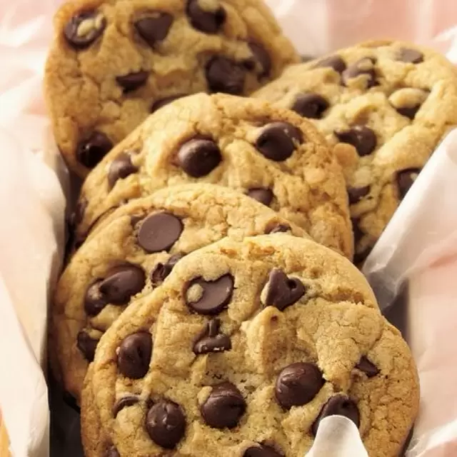

Receta de Galletas con chispas de chocolate

Ingredientes:
- 180 gramos de mantequilla
- 2 unidades de huevos
- 225 gramos de azúcar
- 220 gramos de harina
- 1 sobre de levadura (7 gramos de levadura)
- 1 cucharada sopera de aroma de vainilla
- chispas de chocolate
Pasos a seguir:
- Para preparar lasgalletas con chispas de chocolate caseras, primero retira la mantequilla de la nevera una hora antes, debe estar a temperatura ambiente. A continuación, coge un bol y añade la mantequilla y el azúcar, con unas varillas eléctricas bate hasta que se queden una pasta cremosa.
- Añade los huevos de uno en uno, mezclándolos bien. Echa el aroma de vainilla y mezcla.
- Pon la harina con el sobre de levadura química, tamízala y ve echando poco a poco a la masa, mezclándola muy bien y que no queden grumos. Bate bien hasta que te quede una masa homogénea que se pueda coger con las manos.
- Cuando tengas la masa lista, añade las chispas de chocolate. Puedes añadir chispas de chocolate con leche o chocolate negro, también puedes añadirlas mezcladas. Remueve todo.
- Enrolla la masa en forma de rulo con papel film transparente y, a continuación, introduce el rulo de masa en la nevera 1 hora. Puedes hacer dos rulos y utilizar uno y el otro guardarlo para otro día. Se conserva bien 3-4 días en la nevera, también lo puedes congelar.
- Prepara una bandeja de horno, pon una hoja de papel vegetal para horno. Corta el rulo en rodajas de unos 2 cm. las vas poniendo en la bandeja, también puedes hacer bolas y aplastarlas un poco. Pon encima de cada trozo de masa más chispas de chocolate. Enciende el horno a 180 ºC con calor arriba y abajo.
-
Introduce la bandeja en el horno y deja que se hagan las galletas durante 12-15 minutos, puede variar según el horno. Retira y deja que se enfríen. Debes estar pendiente de las galletas, se hacen enseguida, deben quedar doradas vigilando que no queden muy tostadas. Además, también deben quedar blanditas al retirarlas del horno, ya que cuando se enfrían se endurecen.
- Pasa las galletas con chispas de chocolate caseras a una fuente y ya estarán listas para comer. Cuéntanos en los comentarios tu opinión y comparte con nosotros una fotografía del resultado final.